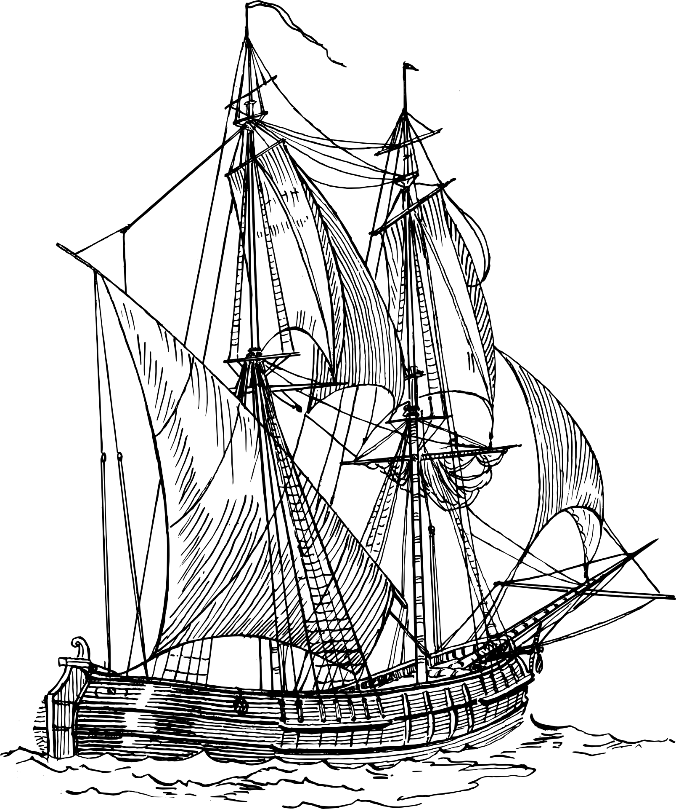

Enquanto a Idade Média distraia os europeus, os navegadores chineses se tornaram extremamente habilidosos, e então começaram a explorar o mundo. O almirante Zheng He, entre 1405 e 1433, comandou a maior frota do mundo, 317 navios e 37.000 homens realizaram sete explorações pelo Oceano. Algo impressionante, era que o objetivo de tais expedições era mostrar para o mundo o quanto a dinastia Ming era civilizada e não necessitava de materiais e conhecimentos externos. Essa demonstração era feita através de doações de tesouros dos mais preciosos para os outros povos, um dos navios que fazia o transporte desses bens era o maior navio da frota com 134 metros.
Para realizar seus objetivos os chineses desenvolveram diversos objetos e técnicas, como a bússola, o leme central, compartimentos a prova da água e velas sofisticadas em mastros múltiplos. Na verdade, as velas foram muito bem melhoradas, não era mais necessário subir nos mastros para desenrolá-las e seu novo formato tornava mais fácil a navegação em rotas confinadas. Apesar de todos os avanços, os chineses abandonaram as navegações em 1433, por questões políticas.
